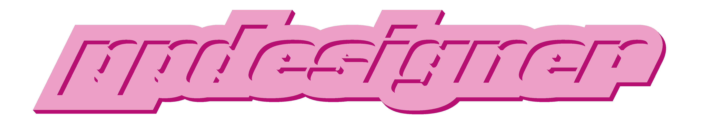
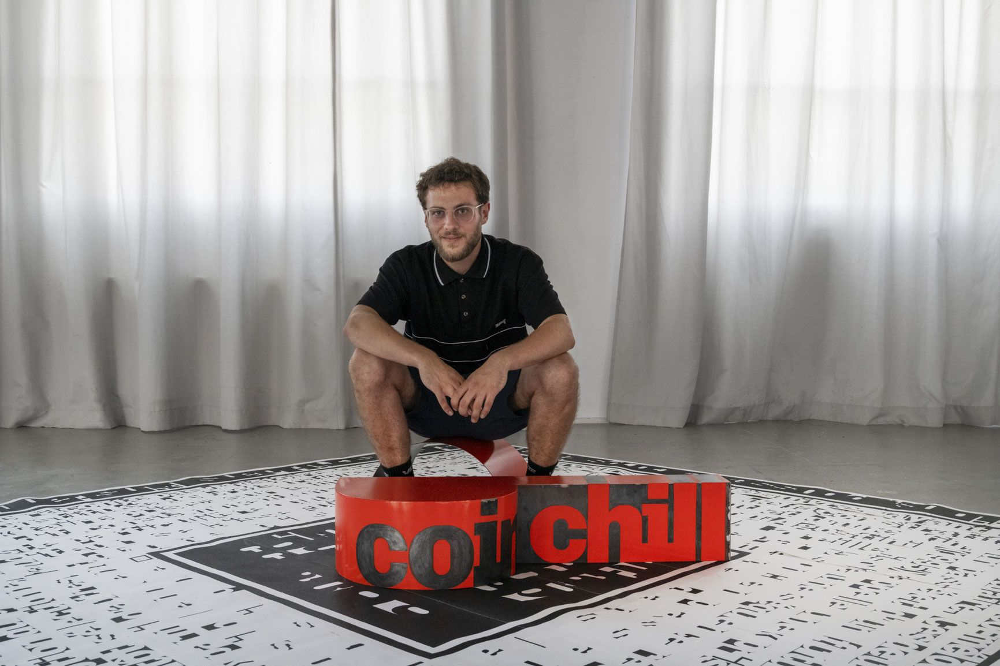

Félix Fritz
→ Designer Graphique
→ Directeur Artistique
→ Marchand de tapis
→ Concepteur d'enceintes
mail: felix.fritz@hotmail.com
tél: 06.01.02.67.29
À propos
Designer graphique titulaire d'un Diplôme National Supérieur d'Expression Plastique en Design Média obtenu à l'École Supérieure d'Art et Design de Saint-Étienne en 2022. (→ citedudesign.com)
Réalisation d'éléments de signalétique, d'affiches, d'objets imprimés (catalogues, brochures, bannières) et d'identités visuelles, du support imprimé jusqu'au site internet, tout en réalisant la direction artistique du projet.
Depuis 2025, Félix Fritz, aux côtés de Louis Chevalier, Thomas Dutoit, Emma Faury--Graziani, Manon Freulon, Mathilde Garcia et Perrine Kamoun, a fondé le collectif ppdesigner.
À travers leurs projets passés et à venir, ppdesigner imagine des expositions accessibles et ouvertes, où se rencontrent designers et artistes contemporains de générations et d’horizons multiples. Leurs interventions prennent place dans l’espace public, sous la forme de dispositifs scénographiques pensés comme des scènes à ciel ouvert : vitrines, conteneurs, installations ou parcours. Ces espaces, activés par la présence d’œuvres, proposent une expérience sensible et libre, de jour comme de nuit.

→ ppdesigner.fr
Freelance depuis 2022
Disponible et ouvert à toutes formes de projet
Pour toutes demandes → felix.fritz@hotmail.com
Clients
* EPCC Cité du Design
Saint-Étienne (42000)
* CDC Habitat
Le Bourget (93350)
* Ruedi Baur
Paris 11 (75011)
* Jovera Pictures SA
Switzerland / United Kingdom
* La Poste Habitat
Maurepas (78310)
* École Supérieure d'Art et Design de Saint-Étienne
Saint-Étienne (42000)
* Atelier d'architecture Chaix et Morel
Paris 20 (75020)
* TRAFIK
Lyon (69000)
* Mairie de Villeneuve-la-Garenne
Villeneuve-la-Garenne (92390)
* moulin des moissons - Ferme de Moisan
Grosrouvre (78490)
* Denis Coueignoux
* The Next Artist
Paris (75016)
* la Seminoc
Neuilly-sur-Marne (93330)

+
Chaque nom en italique précédé d'une flèche (→) est un lien vers une page, donc n'hésitez pas à cliquer.
Typographies
↑ IBM PLex Mono Regular